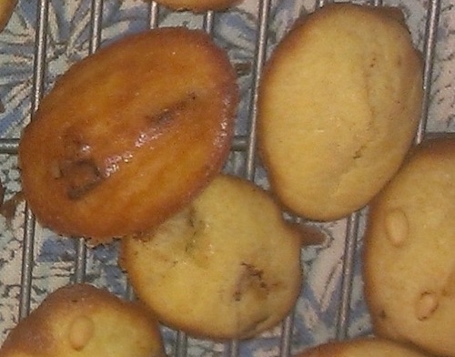
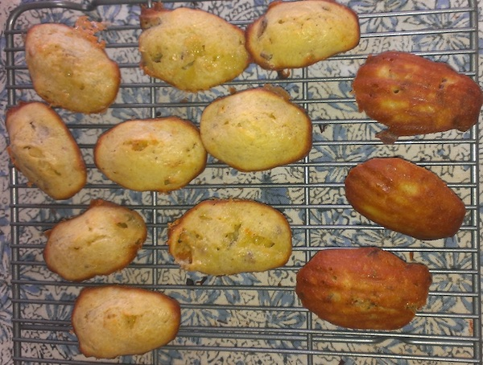
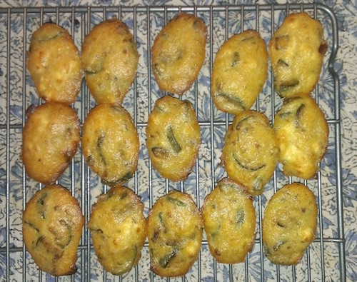
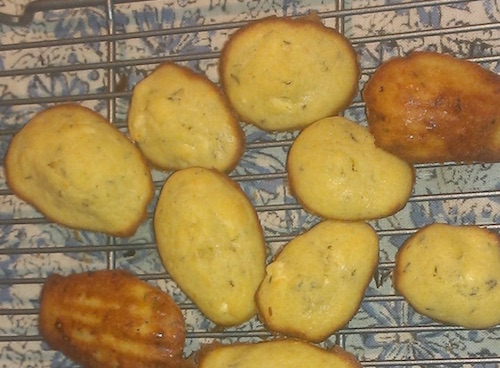

Salty Madeleines
Using the same madeleine recipe without sugar, you can make salty madeleines. It is an opportunity to bake in some bacon, ham, cheese, and/or vegetables.
Duck Prosciutto

Roquefort cheese & bacon

Zucchini & goat cheese

Goat cheese & thyme

...and many more possibilities can be done.
♥
"Duck Prosciutto" is my favorite salty madeleine... so far.